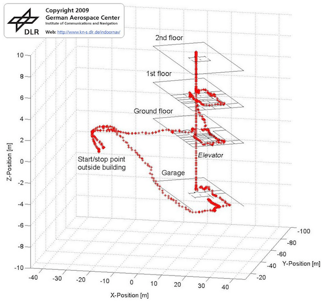

It is extremely important for students and external people to find their destination in large and complex set of buildings, such as a university.
A successful implementation of the proposed system would provide visitors at university with their current location inside the building where they are and the shortest route when searching for a room or laboratory of interest.
3D model indoor example

State of the art and limits
Google Maps for Android began introducing floor plans of shopping malls, airports, and other large commercial areas.
It knows where the WiFi hotspots are in a given building, and through the signal strength triangulation it can roughly define where you are.
Limits:
it provides just 2D navigation;
in spaces where there are different materials, the signal is too noisy;
it proves to be good just to tell you whether you are in that particular building when you already are inside without any further detail.
The localization technique used for positioning with wireless access points is based on measuring the intensity of the received signal (received signal strength in English RSS) and the method of "fingerprinting"[1].
Challenges
Navigation in the building is complicated because of: